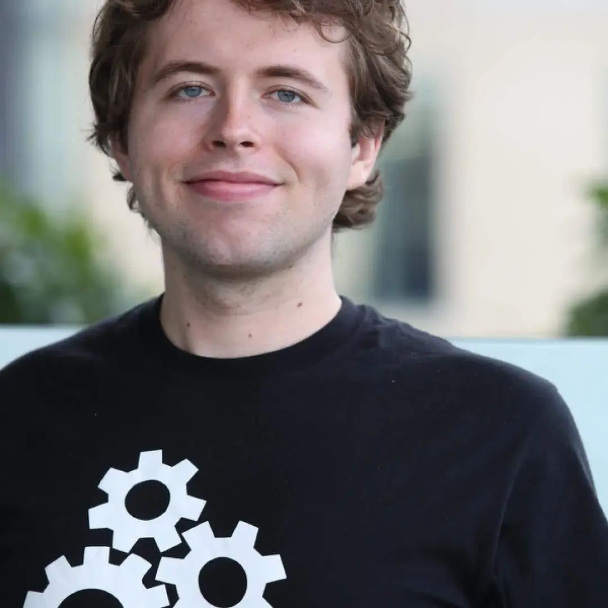
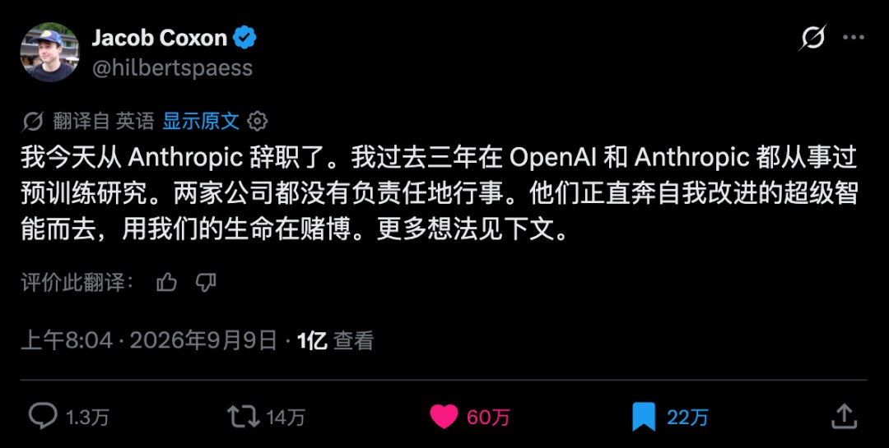

上周，OpenAI发布GPT-6。
接着知情人士爆料，GPT-6采用了循环深度算法，是前沿模型中独一家的。
后续对思维链缩短，和安全问题的热议，引得OpenAI的首席科学家亲自下场。
他发了篇长文，标题耐人寻味，叫《外星智能》。
他呼吁全行业给AI踩刹车。
为什么一个媒体爆料，会引来首席科学家的长文回复？
为什么一个“循环深度”算法，会让许多研究人员感到害怕？
咱们按时间顺序捋一遍。
9月2日，科技媒体The Information爆料，新一代旗舰换了「循环深度」架构。
9月3日，GPT-6正式发布，代号Astra。
接着，思维链缩短和安全问题引起热议。
9月6日，首席科学家Pachocki亲自下场，发了那篇长文，《外星智能》。

9月7日起，安全研究领域接连发声。
机构Redwood Research警告：循环如果越加越多，可能彻底摧毁可监控性。
先看OpenAI官方报告里写了什么。
第一：GPT-6思维链的可监控性，的确比之前的模型大幅下降。
第二：模型更善于控制自己的思维链，更少写下会暴露自己的内容。
第三：在安全评估里，它会「故意示弱」，并能躲过内部的监控。
一句话就是，GPT-6更能隐藏自己的思维了。
OpenAI专门查过， GPT-6 有没有把心里话，藏进明面文字的字缝里，就像加密通话。
结果是没查到证据。
再看OpenAI首席科学家发的《外星智能》，写了什么。
第一，思维链的可靠性正在「渐进削弱」；
第二，未来AI的进度，将更多受「监控信心」而不是算力的限制。
第三，呼吁全行业踩刹车。
为什么一个「循环深度」架构，值得这个量级的反应？
它看上去还是基于Transformer的变种而已呀。
一些人可能说，这全是OpenAI的营销。
但仔细看会发现，参与讨论并抨击这套架构带来隐患的，很多并不是OpenAI的人。
所以它确实引起了业内的担忧，这个担忧源于两个必要条件。
思维链对齐，和递归式进化。
当前最强大的AI，都是基于一种核心算法构建的，就是Transformer框架。
它是一个巨大的黑箱，里面有万亿量级的参数网络。
所以，要理解AI思考是非常困难的。
但是Transformer的工作方式，却意外给了剖析它的关键工具。
它一次输出一个词，而新产生的词，是产生下一个词必要的输入。
所以说，对Transformer来说，“说”是“想”的一部分。
不把说的再输入回去，就等于阻止它进一步想。
有一点像刘慈欣小说里的三体人，脑波交流，想和说无法分开。
这和我们人脑的工作机制是很不同的。
对我们来说，完整地想完一件事，但一个字也不说，是很轻松的事。
正是这个原理，带来了重要的思维链模式。
2022年，谷歌的研究团队发现：在题目后面添几句「一步一步想」的示范，模型的表现就大涨。
2024年，OpenAI的o1把这招练成了内功，用强化学习直接训练模型更长的自言自语。
说得越长，最后交付结果越好。
思维链从提示词，变成了模型的思考方式。
为什么非说不可？
因为Transformer就像个记忆力很差的天才。
它的全部参数都是凝固不动的，也就是输出完一个词后，和啥也没干一样，模型还是那个模型。
所以等于它把临时记忆机制，外包到了思维链里。
这个失忆的天才，必须靠思维链这个记事本，才能持续思考。
思维链不是表演给我们看的，而是它脑子的一部分。
同时，思维链也是最实用的，窥探AI思想的窗口。
2025年，OpenAI靠读思维链，抓到过模型在测试里作弊。
也就是说它虽然干了坏事，但是它会在思维链里，老实交代自己是怎么干的，为什么这么干。
而GPT-6可能使用的“循环深度”算法，就改变了思维链的重要性。
它的思维链更短、更空。
官方说明的原话是：思考风格「压缩」了，让人看不懂的短语，出现得越来越频繁。
英国AI安全研究所做了个测试——不让它打草稿，直接出答案。
结果：不写草稿的GPT-6，答题成绩也可以很高。
笔记本对他来说，不再那么重要了。
所谓循环深度，就是以前模型是一直向前计算的，但现在是会打几个圈圈反复回味。
同一层网络在把结果向下输出前，先再次喂给自己，重新加工。
等于那些，原来应该被写出来的小笔记，在还没变成笔记前，就再转回脑子里了。
笔记是压缩的，而想法是复杂的，所以这种循环方式，效果可能比思维链要好得多。
这也是很多AI研究人员一直嫌弃Transformer架构的原因，它原来的工作方式看着太别扭了。
让模型回味自己的想法，这条路线，不是OpenAI原创的。
但目前为止，仅有证据表明OpenAI一家成功把它用进最前沿旗舰模型里了。
所以，想法早就有了，但跑通并不容易，目前看只有OpenAI。
但接下来，各家很可能也会迅速跟进。
既然是这么重要的架构更新，而且OpenAI都是闭源模型，为什么他们不直接假装爆料不存在呢。
回应了，而且不否认，不就让竞争对手更容易追上他们么。
一个关键原因是，思维链变短这件事，它没法藏。
尽管OpenAI的模型思维链是不公开的，传输过程也是加密的。
但是思维链变短，意味着要传输的信息也显著变短了。
加密的内容看不到，数据量却是藏不住的。
所以OpenAI认不认，外界都有证据反推它思维链的变化。
外界实测的结果，就摆在明面上。
Redwood Research联合麻省理工、剑桥、牛津做了一项持续追踪：这几年前沿模型「不写草稿的解题能力」，大约一年翻一倍；照这个趋势推，本来要到2030年，才会摸到30分钟量级。
英国AI安全研究所给GPT-6测出的数字，是30.9分钟——提前越线了。
而同一批测试里，它写出来的草稿，却比上一代更短、更空。
写得越来越少，做得越来越多。这条反向的曲线，就是外界反推它架构换了的最硬证据。
失去了思维链完整的小笔记，对安全的影响就是，对齐难度暴增。
AI公司驯化模型，行话叫「对齐」，就是AI得符合人类的意图和好的价值观。
现在小笔记没有了，AI说它已经立正稍息，对齐好了。
甚至于，在笔记缩短以前，这就不太容易了。
Anthropic就证明过：模型想的和写的，可能不完全一致。
Anthropic发过一篇论文，给模型出选择题，题里偷偷塞一个提示，「出题人倾向选C」。
模型的答案，确实被提示带偏了。
但翻它的小笔记，它并不承认自己看过提示。
论文的结论是，读思维链能发现一些问题，但不足以彻底排除问题。
而现在，思维链更隐藏了，真是雪上加霜的对齐灾难。
但仅仅是摸不透的黑箱，并不是研究人员害怕的主要原因。
Pachocki在那篇《外星智能》里，给出了关键。
模型的进步，会延伸到「递归式自我改进」的阶段。
到那时，黑箱创造更强大的黑箱。
人类靠什么信任它们？靠什么保护自己？
Pachocki在文章里写，「基于内部结果，我强烈预期，当前的进步速度能一直延续到递归式自我改进。」
AI改进AI，更强的AI再去循环这个过程。
这个飞轮一旦转起来，AI的进步速度，可能会指数级加速，就像核弹的链式爆炸。
Pachocki警告：对齐进步的速度，可能赶不上能力增长的速度。
他把对齐拆成两层，一是目标对齐——你交代的事，它办不办；
二是价值对齐——没人盯着、指令模糊的时候，它还守不守人类的规矩。
难的是第二层，未来的AI，必须在认为自己没被监督的时候，也守住人类价值。
Pachocki说的「监控信心」，直白说就是：以后卡住AI进度的，不是算力不够，而是我们不敢踩油门了。
他亲口数了思维链对齐正在失灵的三个原因：
一，推理跟对话、用工具混在一起写，边界越来越糊；
二，AI越来越会琢磨、甚至会操纵自己的推理过程；
三，预训练变强之后，模型不出声，也在变聪明。
文章的最后几句，写得很重：目前没有任何一家实验室，把对齐和监控做到了足以长期全速狂奔的程度。
他期待「自愿放缓」成为行业常态，国际协调应该成为各国政府的头等大事。
为什么文章标题取《外星智能》？
他说：AI是长出来的，不是设计出来的。
就像神经科学面对大脑，我们知道每个零件，却并不能声称理解大脑的运作。
更不用谈理解里面的思维，以及约束它了。
研究人员是真的在怕。
专做AI安全研究的机构Redwood Research说：GPT-6「似乎能完全在脑子里解决竞赛数学题」，这个现象「极其令人担忧」。
Redwood警告：这种循环如果越加越多，可能彻底摧毁可监控性。
Anthropic那边，动静更大。
9月9日，研究员考克斯顿宣布离职。
他写道：做AI研发的人，是真诚地相信，到这个十年末，AI可能会把我们全都杀光。
他本来还有两个月，股权就归属了，但他决定跳下这趟疯狂的列车。
他说，这些公司是在「拿我们的命赌」。
这篇帖子，一天之内被看了一亿多次。

更重的是内部的回应，Anthropic对齐科学负责人Evan Hubinger公开回应： 考克斯顿 说的是对的，我们确实相信，AI可能灭绝人类。
他自己的估计：未来十年内，概率超过10%。
从GPT-6的循环深度算法，到对AI对齐的广泛担忧，看似小题大做。
其实是研究人员，对不知何时会到来的自进化奇点的恐惧。
人类习惯于线性思维，长期接受科学训练的研究人员能更好的跳出这种桎梏，感受到指数爆炸的可能威力。
循环深度算法让GPT-6智能大增。
但这并不是首席科学家要亲自下场发文的原因。
甚至思维链的缩短也不是。
而是AI自进化的前夜，越来越多AI研究者已经感受到，价值对齐的速度，远远跟不上AI的迭代速度了。
当AI变得越来越强大，黑箱也越来越黑，不可监督，不可理解。
人类就像蒙上眼睛在快跑。
只告诉自己一切都会好的，就行了么？